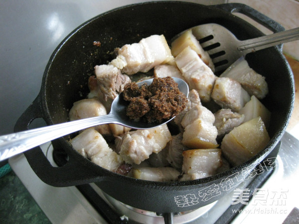
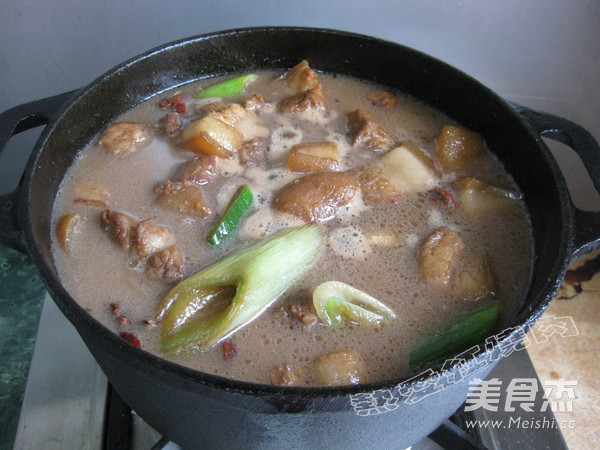

美食奥蝼蛄虾
Austinogebia edulis
节肢动物门 奥蝼蛄虾属
美食奥蝼蛄虾 （学名：Austinogebia edulis）：俗称鹿港虾猴，是辽宁大连、中国台湾鹿港地区的海鲜名产。最大体长7厘米，普通5-6厘米。从外形来看，蝼蛄虾介于虾和蟹之间，但更像虾。甲壳软薄，头胸甲稍侧扁，一定程度钙化，具短的三角型额角，下缘具2-5刺，头胸甲侧脊前部不具刺或最多只有1-2 个小颗粒，腹部长大，对称，直伸，稍钙化，末端形成尾扇。 采收和储藏方式：春、秋季捕捉。退潮时，用铁铲于海滩上挖掘，或用毛笔伸入其穴中钩捕。鲜用或晒干。产于中国台湾地区。多栖息于淤泥沙滩，主要为泥沙滩的潮间带。美食奥蝼蛄虾生长在潮间带之间，潮间带可以缓冲海浪直接冲击陆地的力量，如果潮间带太窄太小，大浪将对陆地造成大破坏。潮间带也是人类亲近海洋时，最先接触的地方。这里有一个链接连接到百度百科
红烧肉
家常菜
炒 红烧 炒锅
很多朋友都问我你咋不发红烧肉呀，白叫了这个名字了，逗死我了，哈哈。我确实是爱吃肉，不过我很少做红烧肉，我总觉得再瘦的红烧肉炖好了也显得肥的多似的，所以我不怎么做，鉴于老有朋友问我我还是做一次吧哈哈，要不该说我不会做了。最近下雪出门不方便，于是叫我家那位给我买回来的五花肉，哎呀那叫一个肥呀，不过也别埋怨了，白听戏别嫌挤哈，要不下次还不给你买了呢，凑合用吧哈。- 所需材料：
- 五花肉
- 佐料
- 酱油
- 料酒
- 红糖
- 等等
- 首先用喷枪给肉皮烧黑
- 将五花肉切小块
- 不放油直接将切好的肉块放进去干煸，一直到五花肉煸出油来
- 烹入料酒翻炒一会儿
- 再加入腐乳碎
- 看到汤汁耗的差不多了就加入盐，再炖一会儿汤汁收的差不多就可以出锅了
牛背上登顶
清晨

日出

雪山
日出
日出
徒步雪山
悬崖
雪松
我